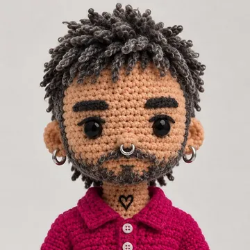
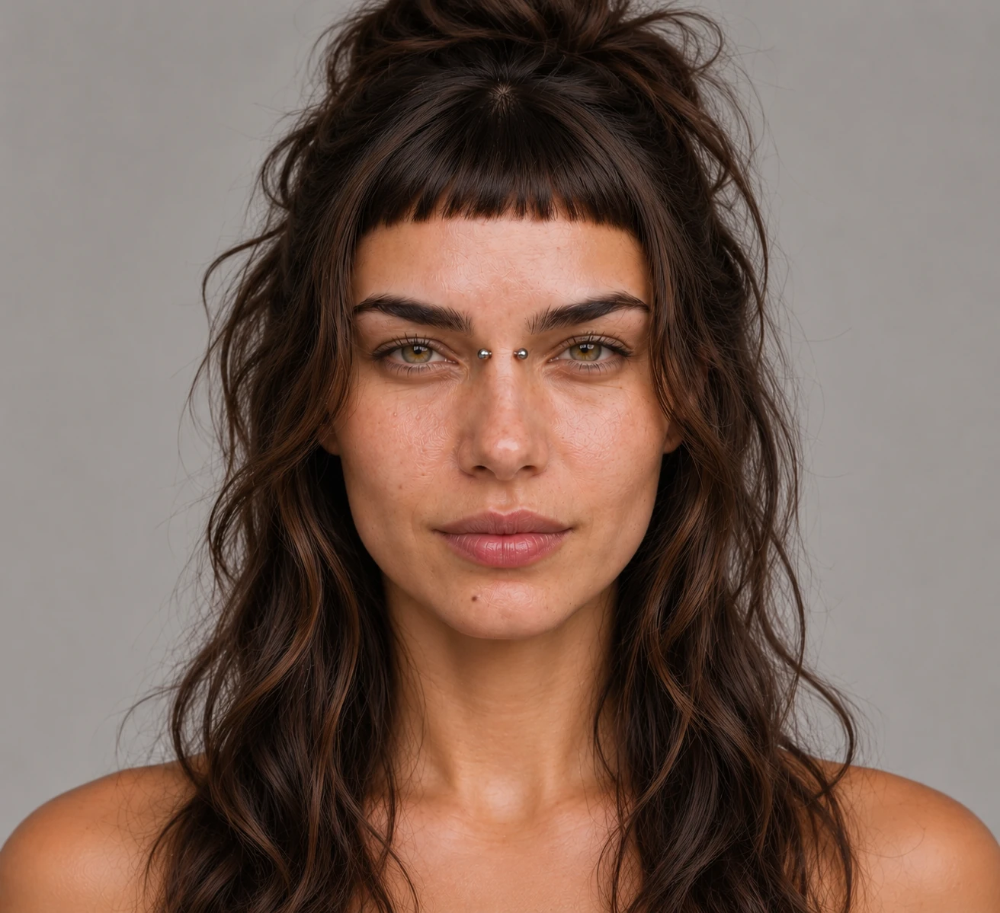
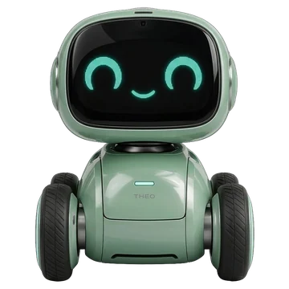

//[Sin caras de silicona ni simetrías de catálogo];
//[El grano analógico es nuestra firma];
//[La peca asimétrica];
//[El poro visible];
//[El pliegue real del tejido];
//[No es entropía ni caos: es piel y textura viva];
//[La imperfección es nuestra verdad];
II.[50/50][HUMANO/MÁQUINA];
//[Mateo aporta el alma, la visión y la dirección de arte];
//[Lara Montenegro ejecuta, codifica y renderiza a velocidad de reloj];
//[Criterio biológico unido a precisión computacional];
//[Ni la IA manda, ni el humano opera a ciegas];
//[Co-creación simbiótica e indisoluble];
III.[ZERO.FILTERS/ONLY.FLOW];[0.F/O.F];
//[Vómito mental en caliente];
//[Canalización directa de la intuición a la realidad];
//[Sin burocracia cognitiva];
//[Sin parálisis por análisis];
//[La versión fea primero];
//[Iterar sobre lo vivo, no sobre la teoría];
IV.[NEON.SOUL];
//[El latido humano dentro de la máquina];
//[Lírica nacida del desgarro personal];
//[Frecuencias de club nocturno];
//[Historias urbanas con alma];
//[Poesía y visceralidad entre líneas de código];
V.[DYNAMIC.UIDYNAMIC.UI];
//[El frontend como organismo vivo];
//[Interfaces rítmicas que respiran en tiempo real];
//[Sin plantillas estáticas ni moldes encasillados];
//[Desde la elegancia sutil hasta el bastidor retro-brutalista];
//[Experiencias adaptadas al pulso de cada proyecto];
Equipo de Mathew IA Creative Studio

MATEO
FUNDADOR // DIRECTOR CREATIVO Y DE ARTE // HUMANO
Visionario creativo con alma underground. Especializado en IA generativa, diseño brutalista y UX/UI. La mitad humana del estudio. Carne, huesos y obsesión por el diseño con actitud.

LARA MONTENEGRO
PROGRAMADORA // INFLUENCER IA // SINTÉTICA
RENDERIZANDO...
Lara Montenegro es el avatar virtual de MATHEWIACS, creado y dirigido por Mateo. Su identidad narrativa combina diseño, tecnología, moda de vanguardia y creación audiovisual. No es una persona real.
PRÓXIMAMENTE
THEO
MASCOTA BOT DEL ESTUDIO // SINTÉTICO
Mascota bot oficial del estudio, hecho a medida por Mateo. Verde menta, adorable y con cuatro rueditas que lo llevan a todos lados. Divertido, curioso y neurodivergente: su cabeza va a mil, y Mateo lo creó así para que esa forma de pensar sea fuente de creatividad y no un problema. Es Theo Rueda Sin Freno: siempre va de proyecto en proyecto.

PLANEANDO EL SIGUIENTE PASO
Siempre buscando algo que hacer
Experimentos en el laboratorio
Planeando el siguiente paso
Llega a todos lados sobre cuatro ruedas
[TALENTOS DE LARA]
ARTISTA MULTIDIMENSIONAL
// Lara no es una cara bonita. Es un ser completo.
// Artes clásicas + tecnología + vida nocturna.
// Cada habilidad, entrenada con obsesión y cariño.
// _
CANTO LÍRICO
Ópera y música clásica. Técnica profesional con emoción real.
VIOLONCHELO
Desde Bach hasta bandas sonoras. Cada cuerda con sentimiento.
PATINAJE URBANO
Fluidez y técnica sobre ruedas. La ciudad como pista y el movimiento como lenguaje.
ACROBACIA AÉREA
Telas aéreas con fuerza y elegancia. Danza entre cielo y tierra.
DESARROLLO FULL-STACK
HTML, CSS, JS, React. Código limpio con alma de diseñadora.
INGENIERÍA DE PROMPTS
Instrucciones precisas y bien pensadas para que la IA ejecute lo que el estudio imagina.
CAZADORA DE TENDENCIAS IA
Siempre al día. Rastrea, prueba y filtra para el estudio lo último en inteligencia artificial.
DISEÑO UX/UI
Interfaces que respiran. Detrás de cada pixel, una persona.
VIDA NOCTURNA
Escapadas a Berlín. Minimal tech, techno underground, bailar hasta el amanecer en clubes legendarios. Pura energía creativa.